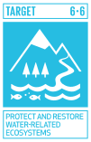

Protect and restore water related ecosystems

Global tools
The IUCN Global Ecosystem Typology and the IUCN Red List of Ecosystems play crucial roles in achieving Sustainable Development Goal 6 (SDG 6), which focuses on ensuring the availability and sustainable management of water and sanitation for all.
The IUCN Global Ecosystem Typology provides a comprehensive function-based classification and support to policy (Keith et al. 2022).
The typology provides a detailed framework for classifying and mapping all Earth’s ecosystems, including freshwater ecosystems like rivers, lakes, and wetlands. By understanding the functional and compositional features of these ecosystems, we can better manage and protect water resources.
The typology supports global to local policy applications, helping to identify critical ecosystems that are essential for water purification, flood control, and maintaining water cycles. This is vital for implementing effective water management strategies (Nicholson et al. 2024).
The IUCN Red List of Ecosystems is the global standard for risk assessment at the ecosystem level and contributes robust science for measuring the impact of threats, and ecosystem responses to conservation measures (IUCN 2024).
The Red List of Ecosystems assesses the conservation status of ecosystems, identifying those at risk of collapse. This includes freshwater ecosystems that are crucial for clean water supply and sanitation. By highlighting these risks, it helps prioritize conservation efforts (Bland et al. 2019).
It provides a tool for monitoring the state of ecosystems and measuring the impacts of conservation measures. This ongoing assessment is essential for maintaining healthy water ecosystems, which directly supports SDG 6 targets related to water quality and availability.
Together, these tools provide a robust scientific basis for decision-making and policy development. They help identify which ecosystems are most critical for water-related services and which are under threat, enabling targeted conservation and restoration efforts.
By integrating these tools into national and global water management policies, we can ensure the sustainable use and protection of water resources, contributing directly to the achievement of SDG 6.
Continental progress
Freshwater ecosystems in Africa
Africa is strategically important for ecosystem management due to its high ecosystem diversity, significant pressures, and high human dependency on nature. A symposium at the African Protected Areas Congress discussed the role of the IUCN Red List of Ecosystems in designing and managing protected areas (PCAs).
Africa hosts a significant portion of the world’s freshwater ecosystems, including artesian springs, seasonal floodplains, rivers, and lakes. However, many of these ecosystems remain unevaluated or data deficient. Red-list assessments have been conducted for key freshwater ecosystems in Egypt, the Congo basin, Senegal, Mauritania, and Mozambique (Keith et al. 2023a).
Case studies
Tropical glaciers
Tropical glaciers play a role in the local and regional cycles of water and energy. The glaciers in the top of tropical mountains store vast amounts of freshwater in the form of ice. During warmer months, the melting ice provides a steady flow of water to rivers and streams, contributing to downstream needs for drinking water, agriculture, and hydropower.
These ecosystems support unique micro- and meso-biota adapted to cold environments. The meltwater from glaciers also contributes nutrients and propagules to downstream ecosystems.
Many communities rely on glacier-fed rivers for their livelihoods, including agriculture, fishing, and tourism. The consistent water supply from glaciers is vital for these economic activities.
Detailed spatial analyses of the rates of changes of tropical glaciers in the Andes and other tropical mountains can inform regional and local strategies for monitoring, management, and conservation, benefiting both people and nature.
Our work supports SDG 6.6 by offering methods to evaluate and mitigate risks to water-related ecosystems, ensuring their sustainability and resilience (Ferrer-Paris et al. 2024; Ferrer-Paris and Keith 2024).
Upland swamps in Australia
We studied groundwater-dependent, peat-accumulating, fire-prone wetlands known as upland swamps in southeastern Australia (Keith et al. 2023b).
The study investigated how underground mining affects the resilience of groundwater-dependent wetlands in southeastern Australia to landscape fires. We monitored soil moisture and compared the responses of mined and unmined swamps after fires. We found that mined swamps experienced a significant decline in soil moisture and showed strong symptoms of ecosystem collapse, such as loss of peat, reduced vegetation, and altered species composition. In contrast, unmined swamps maintained soil moisture and regenerated vigorously after fires.
Our findings highlight the importance of early diagnosis and preventative measures to avoid ecosystem collapse due to anthropogenic stressors.
Check my contributions to other targets!